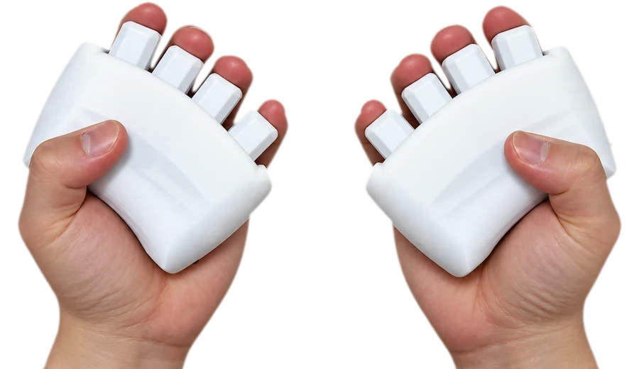
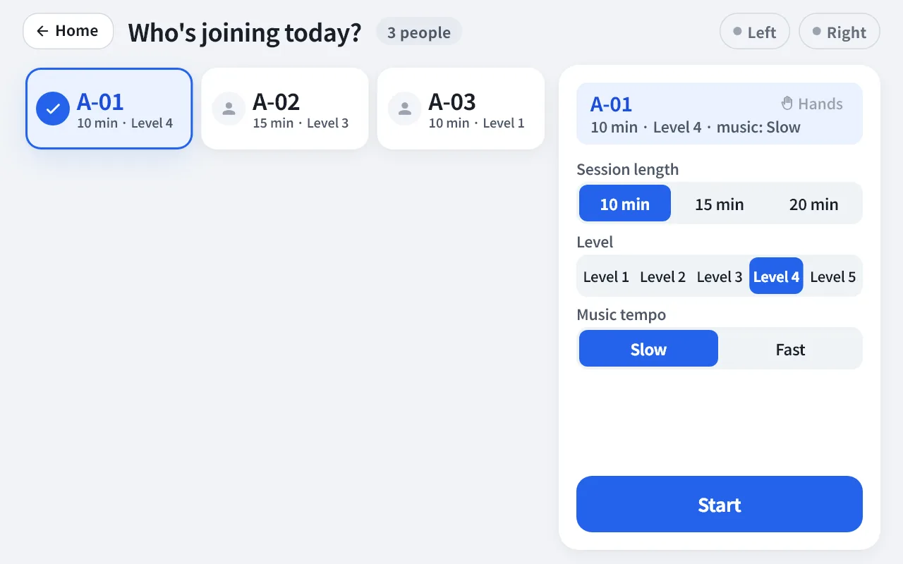
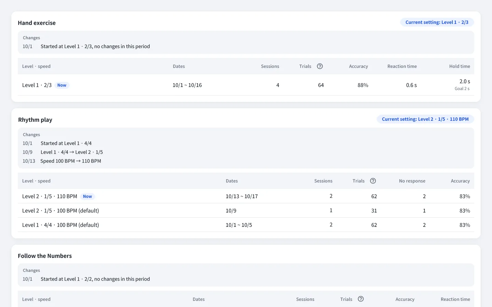
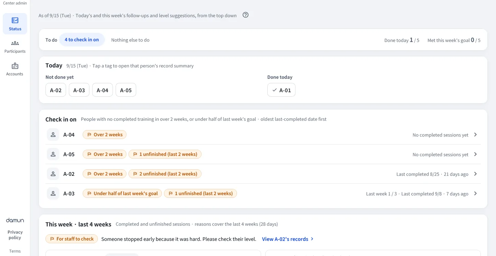

Start your center's hand-exercise program
with ease, and keep it going
A guide to Rehaptic for centers, written for program staff at welfare centers, senior centers, day and night care centers and care facilities.
Planned launch: first half of 2027
Grips, a tablet app and an admin web come as one set
-

Haptic grips
A left and right pair. Each finger has its own lever, and signals are shown by vibration and on screen. They connect to the tablet by Bluetooth.
-

Tablet app
Shows the three activities and results on an Android tablet, and sends records to the admin web over the internet.
-

Admin web
Open it in an internet browser to manage records, reports and accounts.
App screens in English. The admin web currently has a Korean interface only, so its screens here are English renderings of the actual screens of a development environment, using only ID numbers and fictional data. Product specifications, screens and available languages may change.
Run it with just one tablet
Choose the session length and level, and the app guides you from the explanation to practice.
Choose a participant
Staff choose the participant and session length on the tablet.
Check the device
Press each of the eight fingers in turn and check the pictures and numbers.
Explanation and practice
The app reads out what to do, and you practice before starting.
Activities and results
After the three activities, the results are shown and records are saved.
-
The app guides and runs the session
So that training doesn't stop even without a facilitator, the app reads out what to do and shows one thing at a time in large text. Participants can press "I need help" at any time, and staff run the program with just one tablet.
-
Enjoy it like a game, with level suggestions
Pressing in time with music, light and vibration keeps repetition enjoyable. The admin web suggests the next level based on performance records, and staff decide.
-
Records are saved automatically, by finger
When an activity ends, the number of correct answers is shown right away, and participation records gather in the admin web as per-activity records and PDF reports. If the internet drops, the tablet stores the records and sends them when reconnected.
Records built up by finger
From who is training today to each participant's records, check it all in a single internet browser.
Items recorded Sessions · Trials · Accuracy · Time taken · Hold time · Results by finger
- Center status — who trains today and who to look in on, at a glance
- Participant records — level trends and per-session records for each activity
- Level suggestions — suggests who to move up or down based on records; staff decide whether to apply
- Session history · PDF reports · CSV export, plus staff and center accounts and tablet connection management
- RecordsPerformance records and reports by finger
- SuggestLevel and speed suggestions based on performance records (staff apply them)
- PlanPersonalized training suggestions as records build up (AI personalization)
Performance record noticeThese values are records of how training was done. They are not a diagnosis of cognitive function or any condition; medical judgment belongs to the treating medical professional.

Adoption guide
Operating methods and features for each organization are arranged to fit the product specifications.
Inquiry and consultation
We listen to your center's size and how it operates, and look at the setup you need together.
Setup discussion
We discuss the number of grips and tablets, how it will run and the features provided.
Installation and on-site training
On the day of installation we give staff a 30-minute training.
Start of operation
Staff run the program on the tablet, and records gather in the admin web.
Materials provided on adoption
- User manuals — two volumes, for the tablet (staff) and the admin web
- On-site training guide — for the 30-minute session on installation day
- One-page start guide — the admin web address and what to do on day one
- Participant consent form template — a form to collect from older adults (or guardians)
- ID number ledger template — a spreadsheet to match ID numbers with participants
Frequently asked questions
Where is it used?
It was made for program staff at welfare centers, senior centers, day and night care centers and care facilities to use with older adults. It is for people who want to enjoy activities that move the hands and the head together.
What do I need?
You need a pair of haptic grips (left and right), one Android tablet paired with the grips, and an internet browser to open the admin web.
If the internet drops for a moment, the tablet stores the records and sends them automatically once it is connected again.
Is the older adult's name saved in the records?
Participants are registered not by name but by an ID number set by the center (for example, A-01). Only the number is stored on the tablet and the server. We provide a spreadsheet template so that the table matching numbers to older adults is kept on just one of the center's office PCs.
Can someone who uses only one hand, or wants to leave out a finger, use it?
For each older adult you can set "uses one hand" and "fingers to leave out of training". The setting applies only to that person and does not carry over to the next.
What if it is too hard or too easy?
You can choose the session length and a level from 1 to 5, and for rhythm play the music tempo, slower or faster. The admin web tells you who might be ready for a higher level based on performance records; staff decide.
What if sound or vibration is uncomfortable?
In the staff settings you can lower or turn off the sound volume, the voice guidance and the vibration on pressing.
What if an older adult presses the screen by mistake?
During training the only on-screen button an older adult can press is "I need help". Ending the session and changing settings is done by staff.
What happens to the records of someone who withdraws consent?
Tell DAMUN and we will delete the records left on the tablet and the records on the server.
Is Rehaptic a medical device?
Rehaptic is not a medical device and does not diagnose, treat or prevent disease. The values in the admin web are records of how training was done, and medical judgment belongs to the treating medical professional.
How much does it cost?
We arrange it to fit the size and setup of your organization. Please contact info@damun.asia.
Considering adoption?
Feel free to contact us about adopting at your center, partnerships, or anything else.